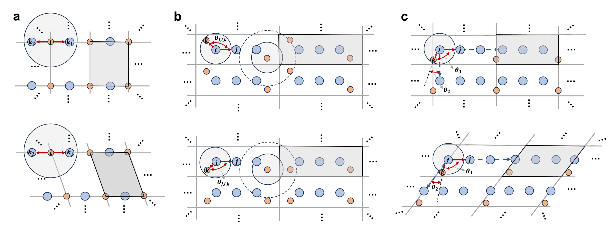
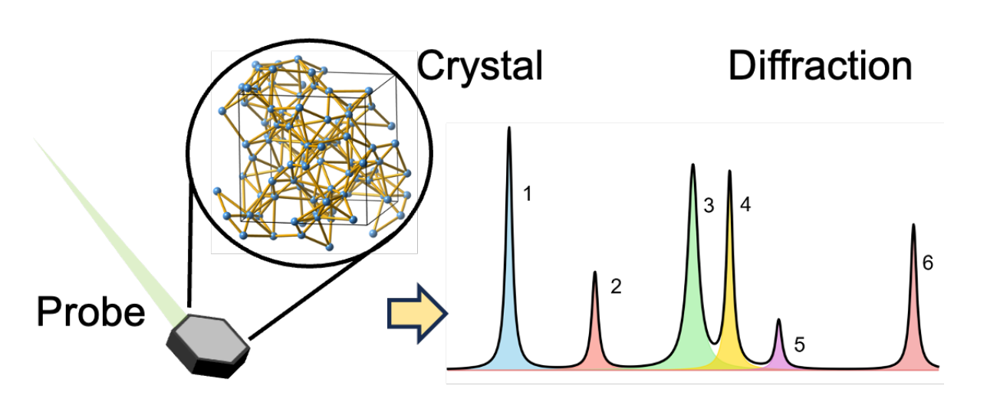
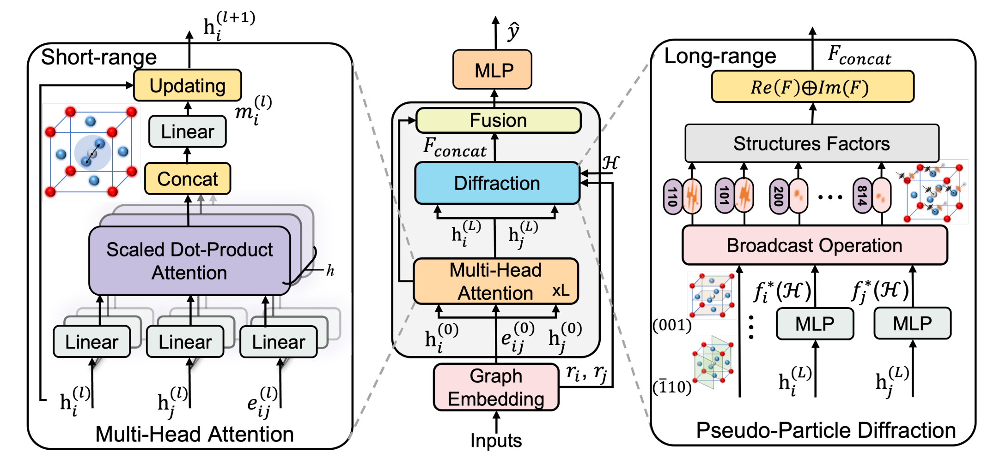
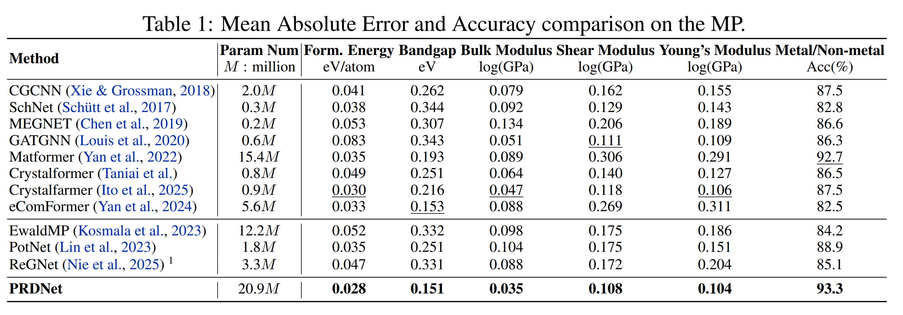

一句话概括：PRDNet 不只让模型“读懂”原子周围的局部连接关系，还让它像做衍射实验一样，从倒易空间观察整个周期晶体。论文提出的可学习“伪粒子”会针对元素、局部化学环境和衍射方向生成自适应散射响应，并与图神经网络特征融合；由此得到对平移、旋转与反射保持不变的晶体表征。
01｜为什么晶体性质预测不能只看局部？
晶体性质预测的目标，是从原子种类、原子坐标和晶格信息中预测形成能、带隙、弹性模量等物理量。传统的密度泛函理论（DFT）能够提供可靠答案，但面对大规模多体体系时计算代价很高。因此，用机器学习近似 DFT、快速筛选候选材料，已经成为材料信息学的重要方向。
近年的主流路线是把晶体视为图：原子是节点，近邻原子间的相互作用是边；随后通过消息传递、图卷积或注意力机制，让节点不断聚合邻居信息。这类方法非常有效，但也有一个容易被忽视的前提：为了控制计算量，图通常使用有限截断半径和有限层数。模型因此最擅长学习局部原子环境，却未必能完整辨认无限周期晶体中的长程周期性。
论文用多个示意例子指出：即便引入多重边、键角信息或周期向量参考系，不同晶体仍可能在有限局部邻域内呈现相同的图表示。换言之，若两种材料“近看”相似、但“远看”的周期结构不同，依赖有限感受野的模型可能把它们混为一谈。这会直接限制形成能、带隙和力学性质等与整体结构密切相关任务的上限。

图 1：论文展示了多重边、角度嵌入和周期向量参考系可能出现的表示歧义。
02｜换一个视角：让模型“看”衍射图样
晶体学提供了另一种天然的结构语言：衍射。入射粒子与周期排列的原子相互作用后，会在倒易空间形成衍射峰。每一个衍射向量对应一种晶面方向，而结构因子汇集了单胞内所有原子的位置和散射贡献。直观地说，图神经网络更像在晶体中逐点走访；衍射则像从不同方向对整个无限周期结构做“全局扫描”。
这种视角有两个吸引力。第一，周期性使得一个单胞就足以解析出整个晶体的倒易空间信息，无需显式构建很大的超胞。第二，衍射的结构因子天然聚合全体原子的相位与振幅，因此可作为紧凑的长程结构描述。论文并非简单把傅里叶变换当作一个通用特征工程工具，而是把它视为有明确物理含义的散射过程。

图 2：晶体的周期原子排列在探测粒子作用下产生衍射响应。
03｜关键创新：为什么要“伪粒子”？
真实 X 射线衍射中，原子的散射能力通常由查表的原子散射因子给出。它主要依赖两个量：原子种类，以及散射向量的模长。这样的物理探针非常适合实验测量，但对机器学习性质预测而言存在局限：同一种元素处在不同局部化学环境中时，其固定散射因子难以显式体现这种差异。
PRDNet 的核心想法是：不受限于某一种真实粒子，而是学习一个服务于预测任务的伪粒子（pseudo-particle）。对原子 i，其可学习的形式因子同时依赖三类信息：
其中，|Q| 是衍射向量的模长；Gθ(G) 是图网络从局部化学环境中学习到的表示；atom type 表示元素类别。
这一步把“元素是谁”“它身处什么环境”“模型正在观察哪个倒易空间方向”统一起来。随后，模型以这些自适应形式因子为权重，按照晶体衍射的结构因子公式，对各个 Miller 指数对应的相位项求和，得到复数衍射表示的实部和虚部。论文设置了在对称操作下封闭的 Miller 指数集合，以保证倒易空间采样的完整性与对称一致性。
04｜PRDNet 是怎样工作的？
从结构到预测，PRDNet 可以理解为一条“双通道、再融合”的路线。
第一步：实空间图编码
模型将晶体构造成原子图，并用径向基函数编码原子间距离、用球面基函数编码键角，同时采用多头注意力聚合邻居信息。这样得到的节点嵌入，既保留局部化学环境，也为后续伪粒子形式因子的学习提供输入。
第二步：倒易空间伪粒子衍射
对每一个选定的 Miller 指数，模型根据节点嵌入生成原子对应的散射强度，再将其与分数坐标带来的相位项相加，形成结构因子。所有方向的实部和虚部展平后，得到全局衍射特征。
第三步：模态级融合
节点特征经过全局池化，形成实空间图表示；衍射特征经过 MLP 映射到同一嵌入空间；两者拼接后再经融合网络输出最终性质预测。这里的重点是模态级融合：衍射被视为整个晶体的全局物理描述，而非简单附加到每个原子上的局部消息。

图 3：PRDNet 将短程多头注意力与长程伪粒子衍射并行建模，再进行融合预测。
05｜不变性：不仅要准，还要符合晶体对称性
对晶体而言，同一结构整体平移、旋转或镜像之后，材料性质不应改变。PRDNet 在两条通道中都围绕这一要求设计：图通道使用距离和键角等 E(3) 操作下不变的几何量；衍射通道通过对称封闭的 Miller 指数集合，以及结构因子的相位性质，保证晶体学操作不会改变最终表示。
这并不是形式上的“加一个数据增强”。不变性意味着模型不会把坐标系的偶然选择误当作材料差异，因而能够把表达能力用于真正的结构与化学变化。论文的价值也正在于：它同时强调全局信息与物理一致性，而不是在二者之间取舍。
06｜实验结果：哪些任务上得到了验证？
作者在三个常用基准上评估 PRDNet：Materials Project（MP）、JARVIS-DFT 与 MatBench。MP 包含 122,959 个稳定结构的形成能、带隙和金属/非金属标签，其中 9,473 个还带有体积模量、剪切模量和杨氏模量；JARVIS-DFT 使用 75,993 个三维材料条目；MatBench 覆盖二维剥离能、形成能、剪切模量、折射率等任务。
在 Materials Project 的对比中，PRDNet（20.9M 参数）在论文列出的六项指标上均为最优：形成能、带隙、三类弹性模量的 MAE 更低，同时金属/非金属分类准确率最高。
| MP 任务 | PRDNet 结果 | 指标含义 |
|---|---|---|
| 形成能 | 0.028 eV/atom | MAE，越低越好 |
| 带隙 | 0.151 eV | MAE，越低越好 |
| 体积模量 | 0.035 log(GPa) | MAE，越低越好 |
| 剪切模量 | 0.108 log(GPa) | MAE，越低越好 |
| 杨氏模量 | 0.104 log(GPa) | MAE，越低越好 |
| 金属/非金属 | 93.3% | 准确率，越高越好 |
更值得关注的是跨数据集表现：在 JARVIS-DFT 上，PRDNet 报告了形成能 0.032 eV/atom、OPT 带隙 0.140 eV、体积模量 0.064 log(GPa)、剪切模量 0.122 log(GPa) 和总能量 0.032 eV/atom 的结果；在 MatBench 上，形成能、剪切模量和折射率任务分别达到 0.019 eV/atom、0.058 log(GPa) 和 0.242 的 MAE。不同任务类型上的稳定收益说明，该表示并非只对某一个目标有效。

图 4：Materials Project 基准对比。具体实验设置与基线定义以论文表格为准。
07｜消融实验告诉我们什么？
一套模型的提升是否真的来自新模块，消融实验最有说服力。在 MP 数据集上，完整 PRDNet 的形成能 MAE 为 0.028 eV/atom、带隙 MAE 为 0.151 eV、金属/非金属准确率为 93.3%。移除衍射模块后，三项指标变为 0.041、0.361 和 81.9%；将多头注意力改为单头、去掉残差连接或边特征，同样会出现明显退化。
这表明 PRDNet 不是“在图网络后面拼接一段频域特征”这么简单。局部图编码、边几何、多头注意力、残差更新与倒易空间衍射之间存在协同：前者负责形成可靠的环境感知原子表示，后者把这种表示投射为全局周期结构的响应。
08｜这项工作的意义与值得继续追问的问题
对材料 AI 而言，PRDNet 提供了一种表征层面的新思路。过去的改进往往集中在更强的消息传递、更丰富的几何基函数，或更大的感受野；PRDNet 则把“图表示是否会丢失区分信息”作为问题本身，利用倒易空间构造一条补充通道。这种把真实科学观测过程转化为可学习表征的方式，也可能启发其他周期体系与多尺度建模任务。
同时，读者也应以研究视角理解这些结果。论文中的“最优”对应给定数据划分、评测协议和所列基线；模型参数量为 20.9M，计算成本、Miller 指数采样规模、对噪声结构和超大单胞的适应性，仍值得在更广泛的实际筛选流程中继续评估。作者在附录中讨论了衍射指数数量与代价的平衡，并报告 300 个指数是性能与成本之间的一个良好折中。
写在最后
PRDNet 最动人的地方，不是给晶体图网络再增加一个模块，而是改变了提问方式：如果局部邻域不足以定义一个晶体，我们能否让模型同时拥有“近看原子”和“远看衍射”的能力？这篇 ICLR 2026 工作给出的答案是肯定的。借助可学习伪粒子，倒易空间不再只是实验表征的结果，也成为可端到端优化的材料机器学习语言。
论文与代码
论文：Bin Cao, Yang Liu, Longhan Zhang, Yifan Wu, Zhixun Li, Yuyu Luo, Hong Cheng, Yang Ren, Tong-Yi Zhang. Beyond Structure: Invariant Crystal Property Prediction with Pseudo-Particle Ray Diffraction. ICLR 2026.
开源代码：github.com/Bin-Cao/PRDNet
说明：本文根据论文正文、附录及项目公开材料整理，数值与结论均应以原论文为准。